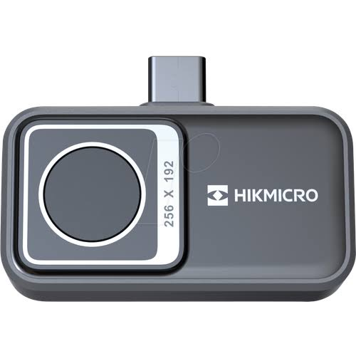

Imagem térmica SuperIR
Realce de imagem em visualização ao vivo e em todas as capturas: contraste e nitidez para identificar anomalias sem esforço.
A Hikmicro MiniE transforma seu celular em uma câmera termográfica capaz de detectar vazamentos, pontos quentes e falhas ocultas antes que virem problema. 20 gramas, precisão de ±2 °C, imagem em tempo real a 25 Hz.

Tecnologia termográfica profissional, simplificada para o seu dia a dia.
Realce de imagem em visualização ao vivo e em todas as capturas: contraste e nitidez para identificar anomalias sem esforço.
9.216 pontos de medição simultâneos em campo de visão de 50°×50°, para inspecionar áreas maiores em menos tempo.
Faixa de medição de -20 °C a 400 °C em dois modos, ideal para inspeções elétricas, HVAC e diagnósticos industriais.
Cabo USB-C com adaptador Lightning incluso: funciona em smartphones e tablets iOS 14+ e Android 7+, e no Windows.
Análise completa na palma da mão: palette de cores, medição de pontos, emissividade ajustável e relatórios em minutos.
Grau de proteção IP40 e resistente a queda de 1 m. Mais leve que uma chave: 41 mm de comprimento, 20 gramas.
Três passos e a anomalia está na sua tela.
Encaixe a MiniE no USB-C ou Lighting do seu celular. Não precisa de bateria própria nem pareamento.
Baixe o HIKMICRO Viewer e abra a câmera. A imagem térmica aparece na hora, em tempo real a 25 Hz.
Varie o ambiente, capture, compare paletas e localize infiltrações, sobrecargas e falhas em segundos.
Cinco aplicações do dia a dia que ela resolve antes que o problema cresça.
Infiltrações, pontes térmicas, falhas de isolamento e perdas de energia em paredes, pisos e janelas.
Pontos quentes em disjuntores, quadros elétricos, cabos e tomadas, detectados antes de virarem falha.
Ar-condicionado, aquecedores e refrigeração: desempenho térmico e vazamentos avaliados sem desmontar nada.
Localize componentes superaquecidos em eletrônicos, máquinas e motores em segundos de varredura.
Localize tubulações, vazamentos e entupimentos pela diferença de temperatura, sem quebrar parede.
Hikmicro MiniE (HM-TJ10-1ARF-MiniE)
Avaliações de profissionais que já inspecionam com a MiniE.
"Achei um ponto quente num disjuntor que a inspeção visual não mostraria. O cliente ficou impressionado e eu evitei um retrabalho."
"Uso no diagnóstico de ar-condicionado e refrigeração. Leve, entra em qualquer bolso e a precisão surpreende pelo tamanho."
"Localizei uma infiltração na laje sem quebrar nada: a diferença de temperatura mostrou o ponto exato. Melhor custo-benefício do mercado."
Leve no bolso uma ferramenta que detecta, previne e resolve. A MiniE chega pronta para usar: câmera, cabo USB-C e adaptador Lightning.
🔒 Compra segura • 📦 Envio rápido • ✔️ Produto original